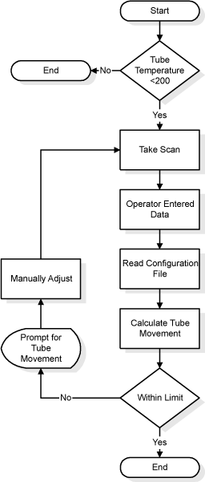
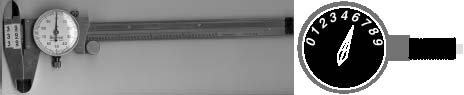
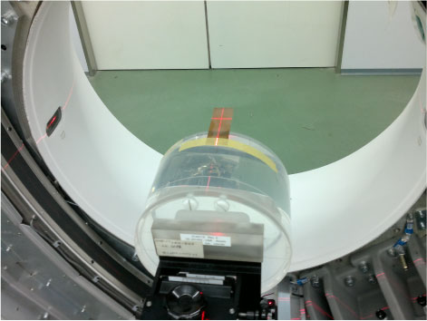
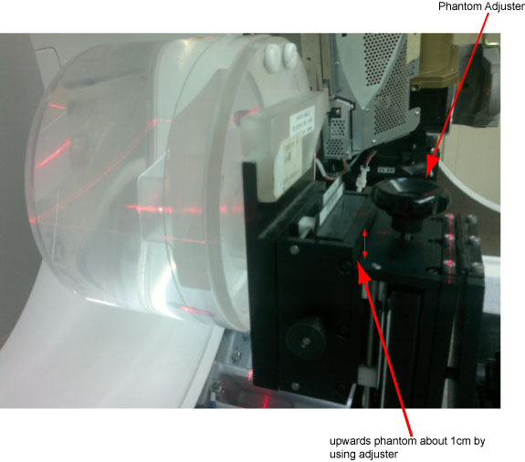
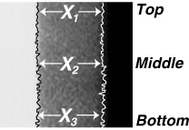

Operating Documentation
Direction 5181178-800, Rev# 16
BrightSpeed Select Service Methods Gen
Module Version 1.0, Version Date 11/12/12
Operating Documentation |
| Required Persons | Preliminary Reqs | Procedure | Finalization |
|---|---|---|---|
| 1 |
The purpose of Plane of Rotation measurement/alignment is to put the X-ray tube in the correct physical relationship to the detector and verify it. This is normally only necessary when the X-ray tube has been replaced or moved.
Illustration 1: POR Procedural Flow

| NOTE: | When performing alignments, wait at least 15-30 minutes between scans to prevent unnecessary adjustments. |
Illustration 2: Vernier Caliper & Dial Gauge Indicator

(For GAFCHROMIC XR-QA Film) POR Alignment procedure, please refer to POR Alignment for GAFCHROMIC XR-QA Film.
(For Polaroid type 52 Film) POR Alignment procedure, please refer to POR Alignment for Polaroid type 52 Film.
| Item | Qty | Effectivity | Part# | Manufacturer | |
|---|---|---|---|---|---|
| Calibrated Vernier Caliper (millimeters or inches) - see illustration, above | 1 | - | - | - | |
| Dial gauge Indicator (millimeters or inches) - see illustration, above | 1 | - | - | - | |
| Item | Qty | Effectivity | Part# | Manufacturer |
|---|---|---|---|---|
| Type 52 Polaroid Film | AR | - | - | - |
| Type 52 Polaroid Film Developer | AR | - | - | - |
| GAFCHROMIC XR-QA Film (The developer is not needed for this film) | AR | - | 5321742 | - |
Wait 90 minutes if the new tube had more than 25 Kilo Joules of energy input, [KV x mA x Sec ÷ 1000] within the last 30 minutes prior to the start of system alignments.
If a tube heat soak has been performed you must wait a minimum of 6 hours before system alignments can be performed.
Make sure the tube is cold before alignments.
Launch the [POR Alignment] tool. Make sure no message pops up requiring tube cooling.
Quit the [POR Alignment] tool.
Mount the Dial Indicator onto the Collimator / Tube Assembly as shown Illustration 3. Make sure you zero the dial indicator, when it is securely in place.
Illustration 3: POR Gauge Mount and Adjuster

Loosen the (4) M-12 bolts that secure the tube. (½ turn out is all that’s necessary, and not any more.)
Get the system’s phantom holder and its 20cm QA phantom onto it.
Cut film to proper size 10mm x 50mm. Cut a corner to indicate direction later. See Illustration 4.
Illustration 4: Film Illustration

Attach (1) “GAFCHROMIC XR-QA Film" on the outside edge of the 20cm QA phantom at the 12 o’clock position.

| NOTE: | Only the film should be projecting into the Gantry bore when complete. The phantom is used only to position and hold the film in the gantry bore, Illustration 6. |
Removed the Table Rear Bottom cover.
Put the 20cm QA phantom on the phantom holder and adjust the holder upward to its highest by using holder vertical adjuster.

Adjust the 20cm QA phantom to ISO center, mark the Table height display, then using table service mode from GTCB to raise the 20cm QA phantom up ISO center 140mm
Advance the cradle and rotate the phantom if necessary, while using the alignment lights, to position the film’s center marking on the alignment light marks.
The old film method used a single scan with the gantry rotating. Due to the sensitivity decrease of the GAFCHROMIC XR-QA film, and in order to maximize the dose to the film, two Stationary scans will be performed.
Perform two offline scans with gantry in the 0 degree and 180 degree position and as follows using the Diagnostic Data Collection menu (DDC).
Static X-Ray On
Scan Time: 3 sec
80kv
220mA
Air Filter
Small focal Spot
Slice / Collimation: 4 x 2.5
Static X-Ray On
| ||||
| Click on the <Position Tube> button BEFORE click on <Accept RX> to position tube at 90 degree and 270 degree. | ||||
Verify that:
The film’s narrow (white beam) slit lies within (between) the wider X-Ray slit.
The film’s edges in both Z direction are equally well defined by the exit slit of the collimator. The edges of the narrow beam should be much sharper than the wide beam. If a difference in edge definition exists, check for gross Z misalignment. (Misalignment of the slit in the tube’s collimator adapter is a common cause of fuzzy film edges.)
Refer to Figures Illustration 5 and Illustration 6 during the following instructions. Use a Vernier Calipers to measure the width of the 2 wider slits. They’re the slits that extend past the edges of the narrower slit and to the part of the film.
Take 3 measurements to obtain an average value for XF. Xf is the side of the film closest to the table. Using the same film measurement tool, take (1) Xf measurement at the top of the film, another near the middle and another near the bottom. Add these (3) Xf distances together and divide this sum by 3 or “n”. Where,
XF = (Xf1 + X f2 + Xf3)/(n)
| NOTE: | It is important that you take multiple measurements. The more measurements you take, the more accurate the measurement. There is less likelihood of a measurement error and you will increase the accuracy of the alignment. |
Illustration 5: XF and XR measurement points

Now take 3 measurements to obtain an average value for XR. Take (1) XR measurement at the top of the film, another near the middle and another near the bottom of the film. Add these 3 values together and divide the sum by 3 to obtain an average for XR.
XR = (Xr1 + X r2 + Xr3)/(n)
Use the values obtained for XF (front distance) and XR (rear distance) in the calculation that follows.
Perform as followings:
Launch the [POR Alignment] tool. Select <Scan>.
Press <Start Scan> when it flashes. In fact this scan is invalid, it only for continue to next step.
Click on the <CALCULATE> button. Enter the values for XF and XR obtained in the steps above. The software will do the distance calculation.
If the tube is out of specification, move the tube as indicated by the program. If adjustment is necessary, clockwise rotation (in) of adjustment bolt moves the tube towards the table side. Repeat Steps 3 through 11 again if you have moved the tube, to check accuracy of adjustment. See Illustration 6 for more details.
Illustration 6: Plane of Rotation Film Interpretation

Adjust M12 mounting bolts to pre-load torque specification. Refer to Table 1.
Table 1: Pre-load Torque Specification
| 25 ft.-lbs | 33 N-m | 295 in-lbs | 340 kg-cm |
Apply final torque on all four M12 bolts according to the values specified in Table 2.
Table 2: Final Torque
| 49 ft.-lbs | 66 N-m | 590 in-lbs | 680 kg-cm |
Wait 90 minutes if the new tube had more than 25 Kilo Joules of energy input, [KV x mA x Sec ÷ 1000] within the last 30 minutes prior to the start of system alignments.
If a tube heat soak has been performed you must wait a minimum of 6 hours before system alignments can be performed.
Make sure the tube is cold before alignments.
Launch the [POR Alignment] tool.
Mount the Dial Indicator onto the Collimator / Tube Assembly as shown Illustration 3. Make sure you zero the dial indicator, when it is securely in place.
Loosen the (4) M-12 bolts that secure the tube. (½ turn out is all that’s necessary, and not any more.)
Get the system’s phantom holder and its 20cm phantom onto it.
Attach (1) “Polaroid type 52" film on the outside edge of the 20cm phantom, at the 3 o’clock position.
| NOTE: | Only the film should be projecting into the Gantry bore when complete. The phantom is used only to position and hold the film in the gantry bore, Illustration 8 |
Orient the side of the film side marked “This side toward lens” towards iso center, see Illustration 7. When exposed and developed later, the film will show the alignment of the x-ray beam with respect to the table, as viewed from the X-Ray tube in the 3 o’clock position.
Illustration 7: Polaroid Film, Type 52

Advance the cradle and rotate the phantom if necessary, while using the alignment lights, to position the film’s center marking on the alignment light marks.
Take a scan.
Remove the exposed film and immediately mark the outside of the film nearest the table. For example, use a pen and print the letter “T” on the film nearest the table, Illustration 7. Go and develop the exposed film. After the film is developed, transfer the table marking to the film itself while keeping the orientation correct, Illustration 8
Verify that:
The film’s narrow (white beam) slit lies within (between) the wider (gray) X-Ray slit.
The film’s edges in both Z direction are equally well defined by the exit slit of the collimator. The edges of the narrow beam should be much sharper than the wide beam. If a difference in edge definition exists, check for gross Z misalignment. (Misalignment of the slit in the tube’s collimator adapter is a common cause of fuzzy film edges.)
Refer to Figures Illustration 5 and Illustration 8 during the following instructions. Use a Vernier Calipers to measure the width of the 2 wider (dark gray) slits. They’re the dark gray slits that extend past the edges of the narrower (off-white) slit and to the blackest part of the film.
Take 3 measurements to obtain an average value for XF. Xf is the side of the film closest to the table. Using the same film measurement tool, take (1) Xf measurement at the top of the film, another near the middle and another near the bottom. Add these (3) Xf distances together and divide this sum by 3 or “n”. Where,
XF = (Xf1 + X f2 + Xf3)/(n)
| NOTE: | It is important that you take multiple measurements. The more measurements you take, the more accurate the measurement. There is less likelihood of a measurement error and you will increase the accuracy of the alignment. |
Now take 3 measurements to obtain an average value for XR. Take (1) XR measurement at the top of the film, another near the middle and another near the bottom of the film. Add these 3 values together and divide the sum by 3 to obtain an average for XR.
XR = (Xr1 + X r2 + Xr3)/(n)
Use the values obtained for XF (front distance) and XR (rear distance) in the calculation that follows.
Click on the <CALCULATE> button. Enter the values for XF and XR obtained in the steps above. The software will do the distance calculation.
If the tube is out of specification, move the tube as indicated by the program. If adjustment is necessary, clockwise rotation (in) of adjustment bolt moves the tube towards the table side. Repeat Steps 3 through 11 again if you have moved the tube, to check accuracy of adjustment. See Illustration 8 for more details.
Illustration 8: Plan of Rotation Interpretation

Adjust M12 mounting bolts to pre-load torque specification. Refer to Table 1
Apply final torque on all four M12 bolts according to the values specified in Table 2
No finalization steps.